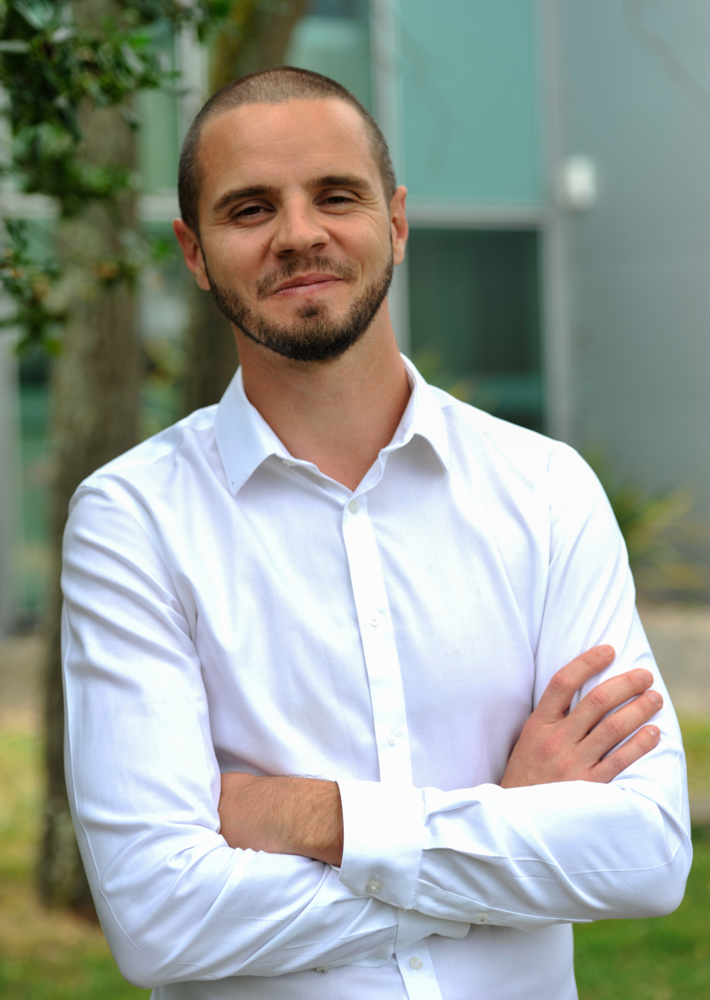
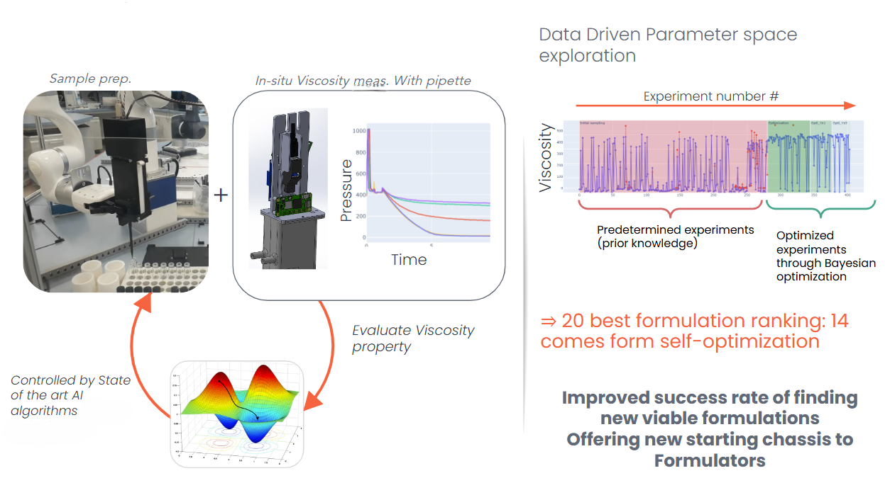
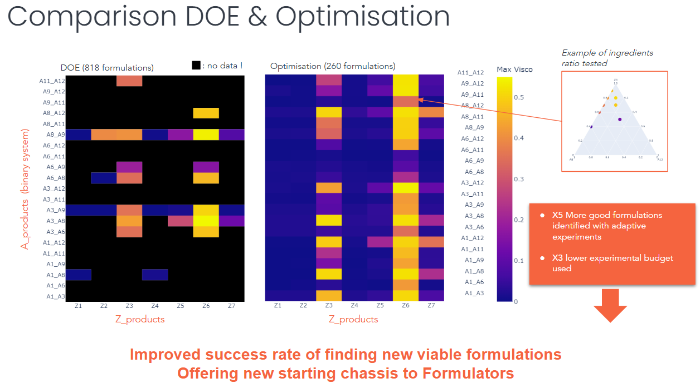
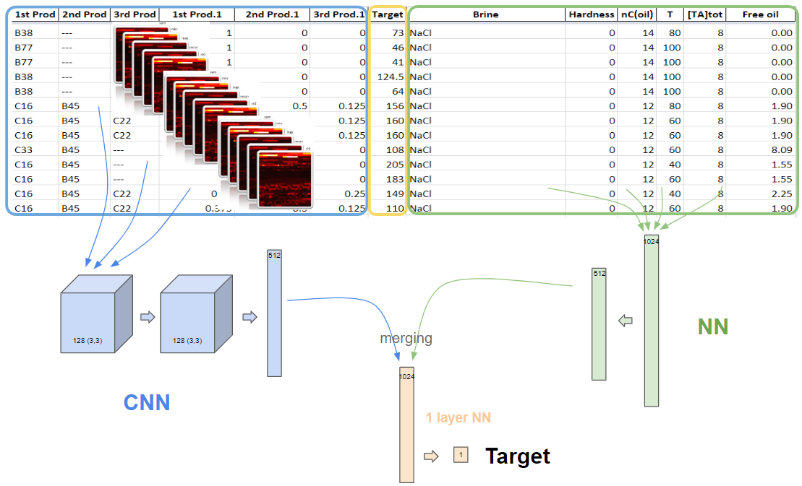
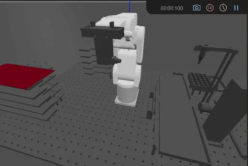
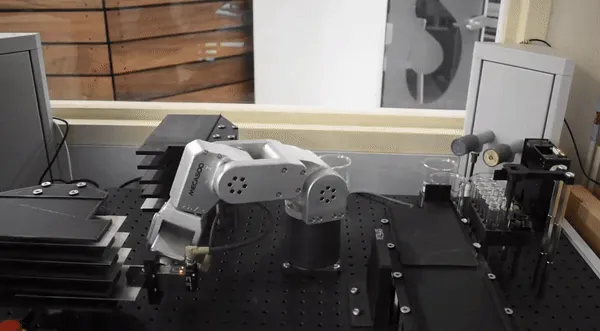
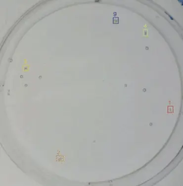

Agentic chatbots — LLMs
RAG, GraphRAG, Microsoft Azure, LangChain
Machine Learning / Deep Learning
Chemoinformatics, TensorFlow/PyTorch,
Scikit-learn, Pandas/Polars, Dataiku
Computer vision
SAM, Detectron2, OpenCV, scikit-image
Self-driving laboratories
Bayesian optimization, intrinsic curiosity
Human-Machine Interfaces
Plotly-Dash, Streamlit, Bokeh
Data management
SQL, Google Cloud Platform, local files (spectra, images, spreadsheets, etc.)
Chatbots agentiques — LLMs
RAG, GraphRAG, Microsoft Azure, LangChain
Machine Learning / Deep Learning
Chémoinformatique, TensorFlow/PyTorch,
Scikit-learn, Pandas/Polars, Dataiku
Computer vision
SAM, Detectron2, OpenCV, scikit-image
Self-driving laboratories
Optimisation bayésienne, curiosité intrinsèque
Interfaces Hommes-Machines
Plotly-Dash, Streamlit, Bokeh
Gestion de la donnée
SQL, Google Cloud Platform, fichiers en local (spectres, images, tableurs, etc.)
6-axis cobots
UR family, Doosan A0509s, xArm, Meca500
Laboratory instrumentation
Linear axes, motors, probes (pH, T°C, η, etc.), spectroscopy, Peltier modules, cameras, profilometers,
syringe pumps, stirrers, flow meters, DLLs, APIs, etc.
Electronic boards
ESP32, Raspberry Pi, Arduino
CAD & 3D printing
SolidWorks, FreeCAD, Ultimaker, FormLabs
Cobots 6 axes
UR family, Doosan A0509s, xArm, Meca500
Instrumentation de laboratoire
Axes linéaires, moteurs, sondes (pH, T°C, η, etc.), spectro, modules Peltier, caméras, profilomètres,
pousses-seringues, agitateurs, débitmètres, DLLs, APIs, etc.
Cartes électroniques
ESP32, Raspberry Pi, Arduino
CAO & impression 3D
SolidWorks, FreeCAD, Ultimaker, FormLabs
Project Management
Gathering customer requirements
Technical and financial feasibility analysis
Budget and schedule management
Writing various documentation and reports
Commissioning at customer sites and after-sales service
Running on-site training sessions
Knowledge transfer
Domain expert for the ai4industry workshop
Training and supervision of interns, work-study students and an engineering apprentice (ENSIM)
HSE officer
Regulatory compliance
Risk management
Gestion de Projet
Recueil des besoins clients
Analyse de la faisabilité technique et financière
Pilotage budgétaire et calendaire
Rédaction des différentes notices et rapports
Mise en service chez les clients et SAV
Animation des formations sur sites
Transmission
Expert métier pour le workshop ai4industry
Formation et encadrement des stagiaires, alternants et une apprentie ingénieure (ENSIM)
Responsable HSE
Conformité réglementaire
Gestion des risques
Alongside a classic experimental approach combining design of experiments and domain expertise, a comparative study driven by a Bayesian optimization algorithm was conducted. The objective was to evaluate the model's ability to autonomously propose the most relevant next formulation in order to quickly converge on the target viscosity.  
Technically, the robotic platform — composed of a 6-axis arm, an electronic micro-pipette (with in situ pressure measurement and modified to be wireless) and a stirring system — is guided autonomously by the Bayesian model to formulate ternary surfactant mixtures: what proportion for each surfactant, and at what stirring speed?
The purpose of this guidance is to discover as quickly as possible the best-performing formulations (target viscosity) while minimizing the number of experiments to be run.
The gain shown between the two approaches, illustrated by the slide below, is 5× more good formulations found in 3× fewer experiments:
En parallèle d'une démarche expérimentale classique combinant plan d'expérience et expertise métier,
je mets en place une étude comparative pilotée par un algorithme d'optimisation bayésienne. L'objectif étant d'évaluer la capacité du
modèle à proposer de manière autonome la formulation suivante la plus pertinente pour converger rapidement vers la viscosité cible.
Techniquement, la plateforme robotique, composée d'un bras 6 axes, d'une micro-pipette électronique (avec mesure de pression in situ et
modifiée pour être sans fil) et d'un système d'agitation, est guidée de façon autonome par le modèle bayésien pour formuler les mélanges
ternaires de tensioactifs – Quelle proportion pour chaque tensioactif, et quelle vitesse d'agitation ?
Ce guidage a un but : découvrir le plus rapidement possible les formulations les plus performantes (viscosité cible) en minimisant le
nombre d'expériences à réaliser.
Le gain affiché entre les deux approches, illustré par la diapositive ci-dessous, est de 5× plus de bonnes formulations trouvées en
3× moins d'expériences :
Evaluation of two different approaches to predict the optimal salinity of surfactant mixtures, based on molecular structures (SMILES transformed into images/matrices) and process parameters, using an internal dataset of about 1000 experimental data points: 
1. Shallow Learning – An ensemble model of decision trees (XGBoost)
2. Deep Learning – A convolutional neural network (CNN, for the molecular structures) combined with a dense network (for the process parameters)
Showing slightly superior performance, the XGBoost model was selected and deployed on the Dataiku platform, after confirmation of the trends (e.g. effect of temperature or carbon chain length) by domain experts.
The model ultimately predicts — with a degree of uncertainty explicitly shown to the user — the optimal salinity for new surfactant mixtures under unexplored operating conditions, thereby accelerating the formulation development process.
J'évalue deux approches différentes pour prédire la salinité optimale de mélanges de tensioactifs, en m'appuyant sur les structures moléculaires
(SMILES transformés en images/matrices) et les paramètres de procédé, sur un dataset interne d'environ 1000 données expérimentales :
1. Shallow Learning – Un modèle d'ensemble d'arbres de décision (XGBoost)
2. Deep Learning – Un réseau de neurones convolutif (CNN, pour les structures moléculaires) combiné à un réseau dense (pour les paramètres de procédé)
Le modèle XGBoost, qui présente une performance légèrement supérieure, est sélectionné et déployé sur la plateforme Dataiku, après confirmation des tendances
(effet de la température ou de la longueur de chaîne carbonée par exemple) par les experts métier.
Le modèle permet finalement de prédire – avec un degré d'incertitude explicitement montré à l'utilisateur – la salinité optimale pour de nouveaux mélanges de
tensioactifs dans des conditions opérationnelles non explorées, accélérant ainsi le processus de développement de formulations.
Agentic-architecture HSE assistant, designed following an analysis of the HSE business need, the state of the art in agentic LLMs and technical/regulatory constraints. Fed with tens of thousands of researcher feedback entries expressed in natural language, the pipeline integrates translation, anonymization and entity extraction to structure the data into a RAG and a GraphRAG on Microsoft Azure, then orchestrates specialized agents (statistical trends, predictions against historical thresholds) via dynamic routing (LangGraph).
Through semantic search, the tool instantly retrieves and synthesizes the relevant information from field feedback that directly concerns the user's question. It thus leverages the company's history by providing contextualized answers while also offering trends and predictions on the topic addressed.
Je conçois un Assistant HSE à architecture agentique, après analyse du besoin métier HSE, de l'état de l'art des LLM agentiques et des contraintes
techniques et réglementaires. Alimenté par des dizaines de milliers de retours de chercheurs, exprimés en langage naturel, le pipeline intègre la traduction, l'anonymisation
et l'extraction d'entités pour structurer les données dans un RAG et un GraphRAG sur Microsoft Azure, puis orchestre
des agents spécialisés (tendances statistiques, prédictions par rapport aux seuils historiques) via un routage dynamique (LangGraph).
Par recherche sémantique, l'outil permet de retrouver instantanément et de synthétiser les informations pertinentes issues des retours de terrain,
qui concernent directement la question de l'utilisateur. Il permet ainsi de capitaliser sur l'historique de l'entreprise en proposant des réponses contextualisées,
tout en fournissant des tendances et des prédictions sur le sujet abordé.
Within the framework of the French Industry 4.0 plan, the La Rochelle plant aims to optimize the management of its ammonium nitrate effluents by monitoring their concentration in real time and integrating a prediction model. To do so, the continuous IoT sensor readings from the plant are correlated with sporadic laboratory analyses (total nitrogen, ammonium, nitrates), which serve as the model's reference, in order to forecast effluent flows for operational decision-making.
Overall project objectives:
1. Real-time monitoring of ammonium nitrate effluents
2. Machine learning training on the plant's sensor streams
3. Effluent flow prediction model for decision support and operation steering
My contribution covers levels 2 and 3: I develop the machine-learning models and integrate them into the decision-making chain, in close collaboration with the laboratory and the plant's IT teams.
AI missions carried out:
· Ingestion, cleaning and timestamp alignment of continuous IoT sensor measurements against sporadic laboratory analyses (total nitrogen, ammonium, nitrates), to check whether the sensor readings can explain or predict them
· Exploratory analysis and visualization of the relationships (correlations, linear regressions — in particular conductivity/pH vs. nitrogen)
· Training and interpretation of regression models (PyCaret, CatBoost, Random Forest, SHAP) — target: nitrates
· Applying the selected model to the full sensor time series to continuously forecast effluent flows
· Development of an interactive interface (Plotly) to visualize, monitor and steer the effluents
IoT sensors tested & calibrated: conductivity (reference solutions at 12 880 and 1 413 µS/cm) · pH (buffers 4/7/9) · redox (240 mV) · dissolved oxygen (water/air interface + nitrogen gas) · turbidity (4000 NTU formazine)
Dans le cadre du plan français pour l'Industrie 4.0, l'usine de La Rochelle souhaite optimiser sa gestion des effluents de nitrate d'ammonium en monitorant leur concentration en continu et en intégrant un modèle de prédiction. Pour ce faire, les mesures continues des capteurs IoT de l'usine sont mises en relation avec les analyses de laboratoire ponctuelles (azote total, ammonium, nitrates), qui servent de référence au modèle, afin de prédire les flux d'effluents pour l'aide à la décision opérationnelle.
Objectifs globaux du projet :
1. Monitoring en temps réel des effluents de nitrate d'ammonium
2. Apprentissage de modèles de Machine Learning sur les séries de capteurs de l'usine
3. Modèle de prédiction des flux pour l'aide à la décision et le pilotage des opérations
Ma contribution couvre les niveaux 2 et 3 : je développe les modèles de Machine Learning et je les intègre dans la chaîne de décision, en étroite concertation avec les équipes de laboratoire et les équipes IT de l'usine.
Missions IA réalisées :
· Ingestion, nettoyage et alignement horodaté des mesures continues des capteurs IoT (Conductivité, pH, Redox, O₂ dissous, Turbidité) sur les analyses de laboratoire ponctuelles (azote total, ammonium, nitrates)
· Analyse exploratoire et visualisation des relations (corrélations, régressions linéaires — notamment conductivité/pH par rapport à l'azote)
· Entraînement et interprétation de modèles de régression (PyCaret, CatBoost, Random Forest, SHAP) — cible : nitrates
· Application du modèle sélectionné à la série temporelle complète des capteurs pour des prévisions continues des flux d'effluents
· Développement d'une interface interactive (Plotly) pour visualiser et prescrire les actions à entreprendre
As part of a request from the Industrial Coatings team to ...  
1. scale up surface-energy characterization of metal plates
2. deepen our scientific knowledge on the correlations between surface energy and adhesion properties
... a project was initiated to automate contact-angle measurement of various solvents on about ten treated metal plates.
Following requirements gathering and feasibility analysis, a compact robotic platform was conceptualized and simulated:
After concept validation, the platform was developed around a simple and guided user experience (tunneling design pattern in Plotly-Dash). A Python program orchestrates a MECA500 arm, a microscope camera and a syringe pump to present the various plates, deposit solvent droplets on them, then measure the contact angle with an image-analysis algorithm. All support elements were designed and 3D printed.
The project was delivered and installed at the customer site, with CE certification (IDAR analysis), the full technical documentation and user training.
Dans le cadre d'une demande de l'équipe Industrial Coatings pour ...
1. monter en capacité sur la caractérisation de l'énergie de surface de plaques métalliques
2. accroître nos connaissances scientifiques sur les corrélations entre énergie de surface et propriétés d'adhésion
... Je gère un projet initié pour automatiser la mesure d'angle de contact de différents solvants sur une dizaine de plaques métalliques traitées.
Après recueil des besoins et analyse de faisabilité, une plateforme robotique compacte est conceptualisée et simulée :
Après validation du concept, la plateforme est développée autour d'une expérience utilisateur simple et guidée (tunneling design pattern sous Plotly-Dash).
Un programme Python orchestre un MECA500, une caméra microscopique et un pousse-seringue pour présenter les différentes plaques, y déposer
des gouttes de solvant, puis mesurer l'angle de contact avec un algorithme d'analyse d'image. L'ensemble des éléments de support est dessiné et imprimé en 3D.
Le projet a été livré et installé chez le client, avec une certification CE (analyse IDAR), l'ensemble de la documentation technique et la formation des
utilisateurs.
To accelerate the time-to-market of chemical products, the Biomatech platform aims to automate OECD Test Guideline No. 202, an acute toxicity test assessing the effects of chemicals on daphnids. To determine whether a product is toxic to the environment, these daphnids are exposed to the chemical under development for 48 hours, and mortality analysis is performed by visual observation. A laboratory experiment was therefore developed; I am in charge of its image-analysis part. 
Using the Detectron2 framework (META), an instance segmentation model is trained to detect daphnids in videos captured by camera. The following elements are developed to successfully carry out the project in accordance with the required specifications:
· Annotation system – explanatory video of the online tool produced and user training
· Learning phase – ingestion of hundreds of annotated images for model creation
· Inference – applying the model to new videos
· Multi-object tracking system – development of an in-house solution for tracking daphnids in the videos
· Results visualization – video export and PDF report generation
Afin d'accélérer la mise sur le marché des produits chimiques, la plateforme Biomatech souhaite automatiser l'Essai n° 202 de l'OCDE,
une épreuve de toxicité aiguë pour évaluer les effets des produits chimiques sur les daphnies. Pour déterminer si un produit est toxique pour
l'environnement, une exposition de ces daphnies au produit chimique en développement est faite pendant 48h, et l'analyse de la mortalité est
réalisée par observation visuelle. Une expérience de laboratoire est alors développée, je suis en charge de la partie analyse d'image de celle-ci.
À l'aide du framework Detectron2 (META), un modèle de segmentation d'instance est entraîné pour détecter les daphnies dans les vidéos acquises par caméra.
Les différents éléments suivants sont développés pour mener à bien le projet conformément aux exigences demandées :
· Système d'annotation – vidéo explicative d'outil en ligne produite et formation utilisateur
· Phase d'apprentissage – ingestion des centaines d'images annotées pour la création du modèle
· Inférence – application du modèle sur de nouvelles vidéos
· Système de tracking multi-objets – développement d'une solution maison pour le suivi des daphnies dans les vidéos
· Visualisation des résultats – export de vidéos et génération de rapports PDF
Optimization algorithm for route planning under distance and elevation-gain constraints.
Algorithme d'optimisation pour la planification d'itinéraires sous contraintes de distance et de dénivelé.
Script to automate video editing with cuts synchronized to the rhythm of the music.
Script pour automatiser le montage vidéo avec synchronisation des cuts au rythme de la musique.
Open-source deck-building game with 7500+ cards generated by local AI.
Jeu de construction de decks open-source avec 7500+ cartes générées par IA locale.
Three versions are available (PDF). Trois versions sont disponibles (PDF).
Generalist CVFull profile — Data, AI & Robotics CV généralisteProfil complet — Data, IA & Robotique AI-focused CVMachine Learning, Deep Learning & LLMs CV orienté IAMachine Learning, Deep Learning & LLMs Mecatronics-focused CVRobotics, instrumentation & prototyping CV orienté MécatroniqueRobotique, instrumentation & prototypage